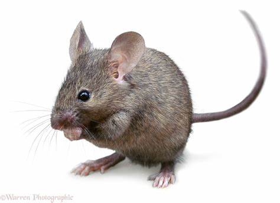
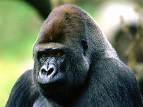
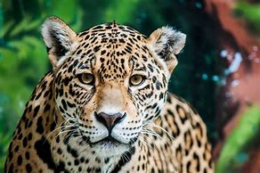

| Mouse | Dog | Ape | Jaguar |
Mouse ~ A mouse or plural mice is a small mammal from the rodent order of animals.
Dog ~ The dog is a domesticated descendant of the wolf. Also called the domestic dog
Ape ~ Apes are a clade of Old World simians native to sub-Saharan Africa and Southeast Asia
Jaguar ~ The jaguar is a large cat species and the only living member of the genus Panthera native to the Americas.
